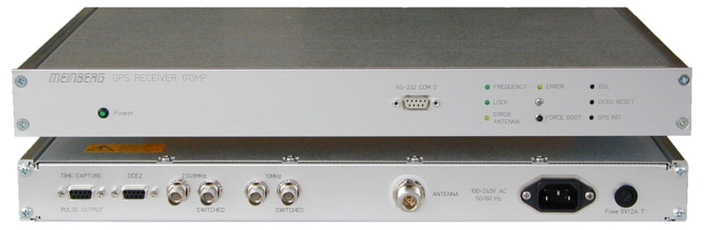
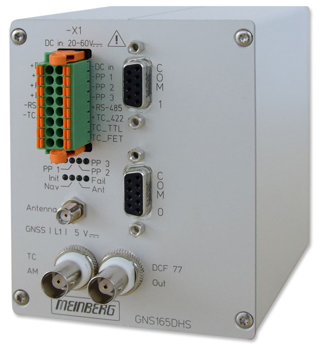
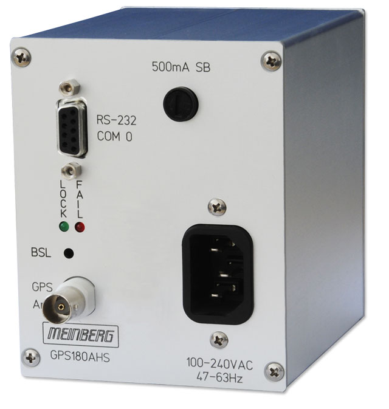
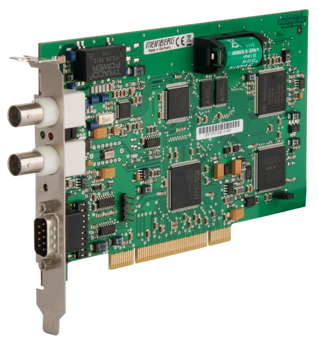
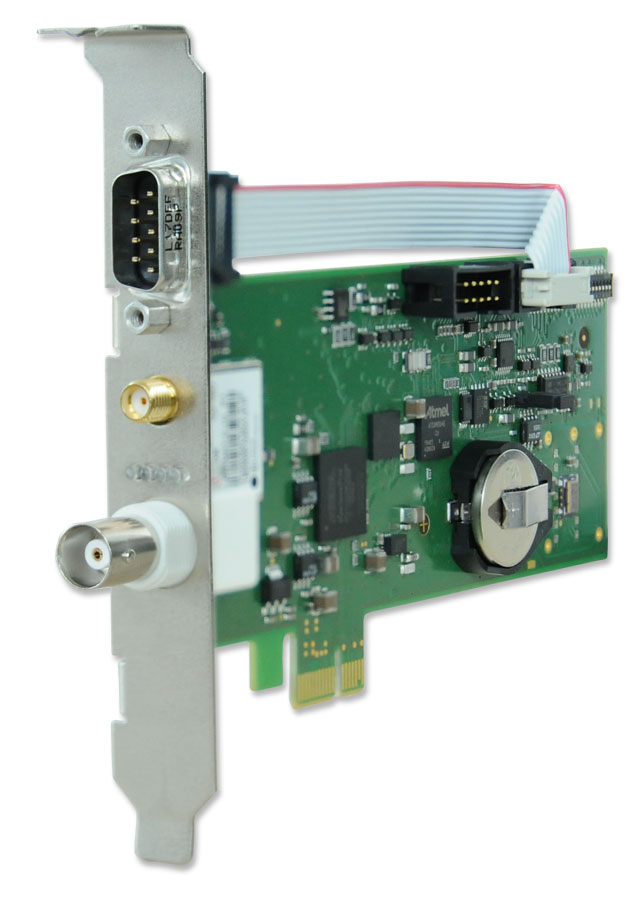
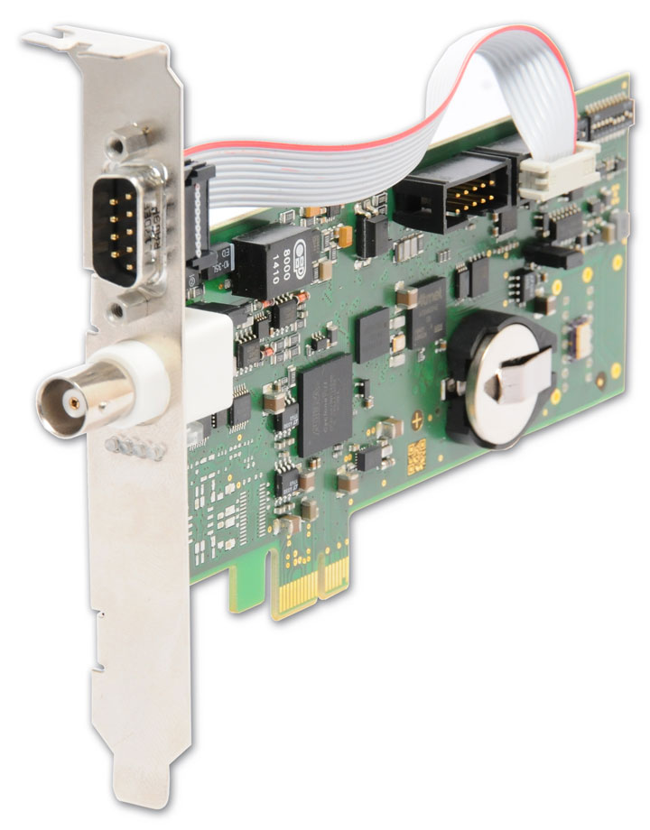
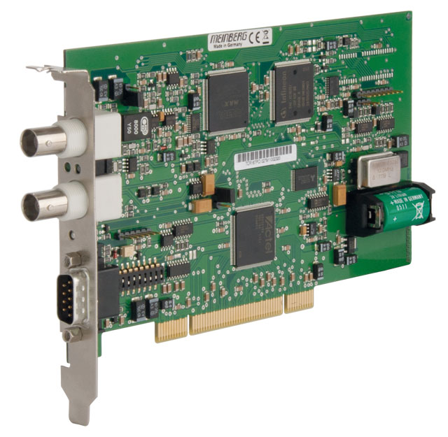
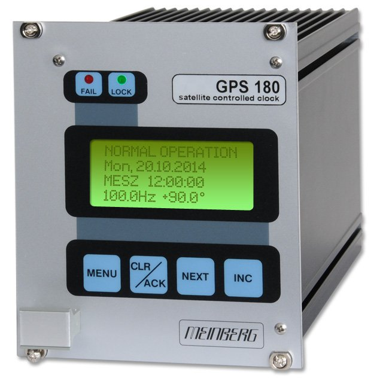
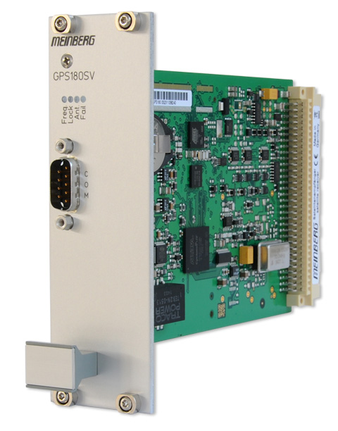

Editregion
Спутниковая система синхронизации GNS-MP обеспечивает различные приложения частотой и точным временем. Устройство имеет выходы импульсных сигналов и частотные выходы. Приемник отвечает высоким требованиям по точности и работоспособности, рассчитан на круглосуточную непрерывную работу. Для работ GNS-MP используется информация, получаемая со СНС (ГЛОНАСС/GPS). Подробнее...


Приемник сигналов Глобальной системы позиционирования. GNS165xHS предназначен для синхронизации различных приложений временным кодом, RS232 или импульсами. Подробнее...
Приемник сигналов Глобальной системы позиционирования. Предназначен для приложений, синхронизируемых через порт RS232. Подробнее...

Карта GPS170PCI-это профессиональное решение для синхронизации вашего компьютера. Различные выходы, такие как IRIG, serial time string или 1PPS, могут использоваться для обеспечения синхронизации с другими устройствами. Мощный, но простой в использовании API позволяет интегрироваться с вашим собственным программным обеспечением, а два независимых входа захвата могут добавить аппаратно временную метку внешних событий в приложение. Подробнее...


Плата GNS181PEX разработана для задач предоставления точного времени для процессов сборки и обработки информации или проведения измерений. Стандарт PCI Express позволяет использовать эту карту практически в любом компьютере. Подробнее...
Карта TCR180PEX-EL синхронизируется от сигналов IRIG-A/B/G, IEEE 1344, IEEE C37.118 или AFNOR NF S87-500 time codes и может быть использована для синхронизации компьютера.


Карта TCR167PCI получает коды времени IRIG-A/B или AFNOR и может использоваться для синхронизации системного времени компьютера. Выход IRIG этой карты может генерировать сигнал IRIG для других систем получающих синхронизацию по протоколу IRIG. Выходной формат не зависит от входящего сигнала IRIG - идеальное решение для ваших требований к преобразованию IRIG.
Приемник сигнала GPS с ЖК-дисплеем и элементами управления (Еврокарта). Разнообразие входов/выходов делает этот приемник выбором №1 для широкого спектра приложений, включая задачи временной и частотной синхронизации и измерения асинхронных временных событи. Подробнее...


Приемник GPS170SV в исполнении «Еврокарта». Более простой и экономичный вариант исполнения модели GPS-170 в формате 8HP/3U (40мм x 128мм). Предназначен для использования в качестве модуля в составе более сложных систем. Подробнее...

ООО "Прайм Тайм"
127322, Москва, ул. Яблочкова д.21, корп. 3, 3 этаж
Телефон/Факс: +7(495) 616-10-00
127322, Москва, ул. Яблочкова д.21, корп. 3, 3 этаж
Телефон/Факс: +7(495) 616-10-00